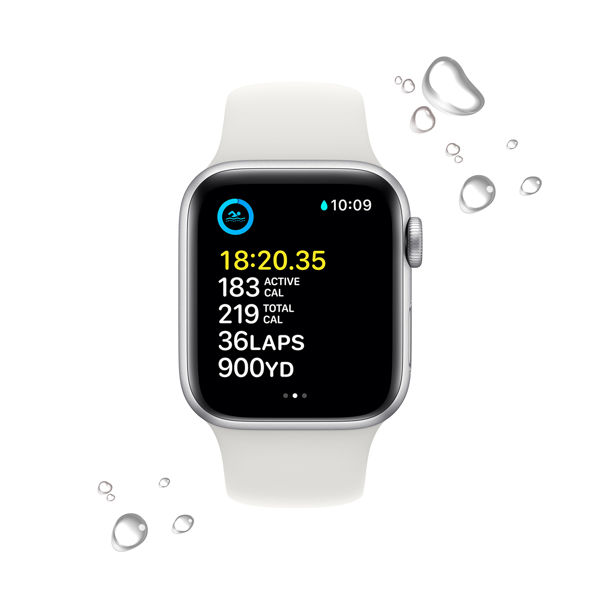

Можна закохатися.
З багатьох причин.
Основні функції для підтримання здоров’я, безпеки й активного способу
життя

Захист від води


Основні характеристики
-
Відповідайте на дзвінки та повідомлення просто із зап’ястя
-
До 20% швидший за попередній Apple Watch SE
-
Розширені функції безпеки, зокрема Виявлення падіння, Сигнал SOS і
Виявлення аварій
-
Відстежуйте свою активність протягом дня з Apple Watch, а потім
переглядайте тенденції в додатку «Фітнес» на iPhone
-
Покращений додаток «Тренування» з удосконаленими підходами до вправ
-
Отримуйте сповіщення про високий, низький і порушений серцевий ритм
-
Слухайте улюблену музику, подкасти й аудіокниги (для використання в
моделях GPS)
- Захист від води
-
Відстеження сну дає змогу дізнатися, скільки часу ви перебували у
фазах швидкого, повільного та глибокого сну
-
watchOS 9 підтримує покращений додаток «Тренування», новий додаток
«Ліки», фази сну та дає змогу краще відстежувати ритм серця